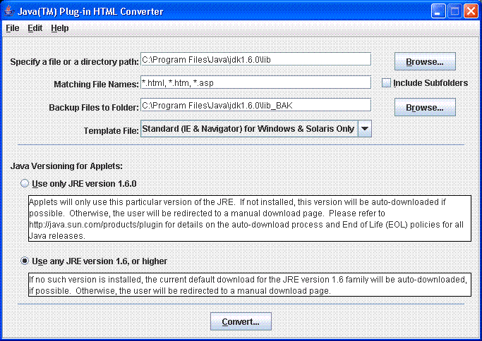

이 섹션에서는, 다음의 토픽에 대해 설명합니다.
주 -
|
HTML 컨버터는, JRE 는 아니고 JDK 에 포함되고 있습니다. HtmlConverter.exe 파일은, JDK 의 인스톨처의 bin 디렉토리에 있습니다. 예를 들어, Windows 의 C 드라이브에 JDK 를 인스톨 했을 경우,cd 를 사용해 C:\Program Files\Java\jdk1. 6.0\bin 로 이동합니다.
컨버터를 기동하려면 , JDK 의 인스톨처의 lib 디렉토리에 포함되어 있는 htmlconverter.jar 를 사용합니다. 예를 들어, Windows 의 C 드라이브에 JDK 를 인스톨 했을 경우, cd 를 사용해 C:\Program Files\Java\jdk1. 6.0\lib 로 이동해, 다음과 같이 HTML 컨버터를 기동합니다.
C:\Program Files\Java\jdk1. 6.0\lib>..\bin\java -jar htmlconverter.jar -gui
UNIX 또는 Linux 로 컨버터를 기동할 때도 이것과 같습니다.
컨버터를 기동하려면 , Windows 익스플로러를 사용해 다음의 디렉토리로 이동합니다.
C:\Program Files\Java\jdk1. 6.0\bin
상기의 디렉토리에 없는 경우는,<sdk_location>\bin 로 이동합니다. 다음에,HtmlConverter.exe 어플리케이션을 더블 클릭 합니다.
cd 를 사용해 <sdk_location>/bin (/home/jones/jdk1. 6.0/bin 등)으로 이동해, 다음과 같이 입력합니다.
HtmlConverter -gui
HTML 컨버터의 윈도우가 표시됩니다.

「폴더내의 단일의 파일」을 변환하는 경우, 패스를 지정해 파일명을 포함합니다. [참조] 버튼으로 파일을 선택할 수도 있습니다. 「폴더내의 모든 파일」을 변환하는 경우, 폴더의 패스를 입력하는지,[참조] 버튼을 눌러 다이얼로그로부터 폴더를 선택합니다. 패스를 선택하면(자),[파일명] 에임의의 수의 파일 지시자를 지정합니다. 각 지시자는 콤마로 단락지을 필요가 있습니다. 와일드 카드로서 「*」을 사용할 수 있습니다. 마지막으로, 일치하는 파일명을 가지는 네스트 한 폴더내의 파일 모든 것을 변환하는 경우,[서브 폴더를 포함하는] 체크 박스를 선택합니다.
디폴트의 백업 폴더 패스는, 소스 패스에 「_BAK」를 추가한 것이 됩니다. 예를 들어, 소스 패스가 c:/html 의 경우, 백업 패스는 c:/html_BAK 가 됩니다. 백업 패스를 변경하려면 ,[백업파일용의 폴더] 라는 이름의 필드에 패스를 입력하는지, 다이얼로그를 표시해 목적의 폴더를 선택합니다.
디폴트의 백업 폴더 패스는, 소스 패스에 「_BAK」를 추가한 것이 됩니다. 예를 들어, 소스 패스가 /home/user1/html 의 경우, 백업 패스는 /home/user1/html_BAK 가 됩니다. 백업 패스를 변경하려면 ,[백업파일용의 폴더] 라는 이름의 필드에 패스를 입력하는지, 다이얼로그를 표시해 목적의 폴더를 선택합니다.
로그 파일을 생성하려면 ,[상세 설정] 화면 ([편집]>[옵션])을 표시시켜,[로그 파일을 생성] 을 선택합니다. 텍스트 필드에 패스를 입력하는지,[참조] 버튼을 클릭해 패스를 선택합니다. 로그 파일도 지정합니다. 로그 파일은, 기존의 것을 지정하는지, 신규에 작성할 수가 있습니다. 로그 파일에는, 변환 처리에 관한 기본적인 정보가 포함됩니다.
아무것도 선택되어 있지 않은 경우, 디폴트의 템플릿이 사용됩니다. 이 템플릿에 의해 생성되는 변환이 끝난 html 파일은, IE 및 Netscape 로 동작합니다. 별의 템플릿을 사용하는 경우, 메인 화면의 메뉴로부터 템플릿을 선택할 수 있습니다. 메뉴로부터 [다른 템플릿...] (을)를 선택하면(자), 파일을 템플릿으로서 선택하는 일도 가능합니다. 파일을 선택하는 경우에는, 그 파일이 템플릿인 것을 확인해 주세요.
주:차에 기술하고 있는 「지정 버젼」은, 컨버터의 기동에 사용하는 JRE 의 버젼입니다 (1.6. 0 등). 버젼의 최초의 2 자리수의 번호는, 「패밀리」를 나타내고 있습니다. 예를 들어,1.6. 0 은 1.6 패밀리에 속하고 있습니다. 제품의 버젼 번호에 관한 설명은,「Java Plug-in 에서의 OBJECT,EMBED, 및APPLET 태그의 사용」이라고 하는 섹션의「버젼 번호에 관한 설명」을 참조해 주세요.
다음의 2 개의 선택사항이 있습니다.
|
[변환(C)...] 버튼을 클릭해, 변환 처리를 개시합니다. 다이얼로그가 표시되어 처리중의 파일, 처리된 파일의 수, 검출된 애플릿의 수, 및 에러의 수가 표시됩니다.
변환이 완료하면(자), 처리 다이얼로그의 버튼이 [캔슬] 로부터 [완료] 로 바뀝니다. 다이얼로그를 다물려면 ,[완료] 를 클릭합니다. 그 후, Java Plug-in HTML 컨버터 프로그램을 종료시키는 일도, 다른 파일 세트를 선택해 변환할 수도 있습니다.
애플릿의 변환은, 템플릿 파일을 토대로서 행해집니다. 템플릿 파일은, 원의 애플릿의 각부를 나타내는 태그를 포함한, 단순한 텍스트 파일입니다. 템플릿 파일의 태그를 추가, 삭제, 이동하는 것으로써, 변환 후의 파일 출력을 변경할 수 있습니다.
지원되는 태그
$OriginalApplet$ |
이 태그는, 원의 애플릿의 텍스트 전체와 옮겨놓을 수 있습니다. |
$AppletAttributes$ |
이 태그는, 모든 애플릿 속성 ( |
$ObjectAttributes$ |
이 태그는,object 태그에 의해 필요하게 되는 모든 속성과 옮겨놓을 수 있습니다. |
$EmbedAttributes$ |
이 태그는,embed 태그에 의해 필요하게 되는 모든 속성과 옮겨놓을 수 있습니다. |
$AppletParams$ |
이 태그는, 애플릿의 <param ...> 태그 모두옮겨놓을 수 있습니다. |
$ObjectParams$ |
이 태그는,object 태그에 의해 필요하게 되는 모든 <param...> 태그와 옮겨놓을 수 있습니다. |
$EmbedParams$ |
이 태그는,name=value 형식의 embed 태그에 의해 필요하게 되는 모든 <param...> 태그와 옮겨놓을 수 있습니다. |
$AlternateHTML$ |
이 태그는, 원의 애플릿의 no-support-for-applets 영역내의 텍스트와 옮겨놓을 수 있습니다. |
$CabFileLocation$ |
이것은, IE 를 타겟으로 하는 각 템플릿으로 사용되는 cab 파일의 URL 입니다. |
$NSFileLocation$ |
이것은, Netscape 를 타겟으로 하는 각 템플릿으로 사용되는 Netscape 플러그 인의 URL 입니다. |
$SmartUpdate$ |
이것은, Netscape Navigator 4.0 이후를 타겟으로 하는 각 템플릿으로 사용되는 Netscape SmartUpdate 의 URL 입니다. |
$MimeType$ |
이것은, Java 객체의 MIME 타입입니다. |
다음에, HTML 컨버터에 동고 되는 4 개의 템플릿을 나타냅니다. 다른 템플릿을 작성했을 경우는, 그 템플릿을 template 폴더에 배치하는 것으로써 사용 가능하게 됩니다.
default.tpl— 컨버터의 디폴트 템플릿. 변환된 페이지는, Windows 상의 IE 및 Netscape Navigator 로, Java Plug-in 의 호출에 사용할 수 있습니다. 이 템플릿은, Unix (Solaris) 상의 Netscape Navigator 에서도 사용할 수 있습니다.
<! -- HTML CONVERTER -->
<OBJECT classid="clsid:E19F9330-3110-11d4-991C-005004D3B3DB"
$ObjectAttributes$ codebase="$CabFileLocation$">
$ObjectParams$
<PARAM NAME="type" VALUE="$MimeType$">
<PARAM NAME="scriptable" VALUE="false">
$AppletParams$
<COMMENT>
<EMBED type="$MimeType$" $EmbedAttributes$
$EmbedParams$ scriptable=false pluginspage="$NSFileLocation$"><NOEMBED>
</COMMENT>
$AlternateHTML$
</NOEMBED> </EMBED>
</OBJECT>
<! --
$ORIGINALAPPLET$
-->
ieonly.tpl — 변환된 페이지는, Windows 상의 IE 로 Java Plug-in 를 호출하는 경우에게만 사용할 수 있습니다.
<! -- HTML CONVERTER -->
<OBJECT classid="clsid:E19F9330-3110-11d4-991C-005004D3B3DB"
$ObjectAttributes$ codebase="$CabFileLocation$">
$ObjectParams$
<PARAM NAME="type" VALUE="$MimeType$">
<PARAM NAME="scriptable" VALUE="false">
$AppletParams$
$AlternateHTML$
</OBJECT>
<! --
$ORIGINALAPPLET$
-->
nsonly.tpl — 변환된 페이지는, Windows 및 Solaris 상의 Navigator 로 Java Plug-in 를 호출하는 경우에게만 사용할 수 있습니다.
<! -- HTML CONVERTER -->
<EMBED type="$MimeType$" $EmbedAttributes$
$EmbedParams$ scriptable=false pluginspage="$NSFileLocation$"><NOEMBED>
$AlternateHTML$
</NOEMBED></EMBED>
<! --
$ORIGINALAPPLET$
-->
extend.tpl — 변환된 페이지는, 임의의 플랫폼의 임의의 브라우저로 사용할 수 있습니다. 브라우저가 Windows 상의 IE 나 Navigator, 또는 Solaris 상의 Navigator 인 경우, Java(TM) Plug-in 가 불려 갑니다. 그 이외의 경우, 브라우저의 디폴트 JVM 가 사용됩니다.
<! -- HTML CONVERTER -->
<SCRIPT LANGUAGE="JavaScript"><! --
var _info = navigator.userAgent; var _ns = false; var _ns6 = false;
var _ie = (_info.indexOf("MSIE") > 0 && _info.indexOf("Win") > 0 &&
_info.indexOf("Windows 3.1") < 0);
//--></SCRIPT>
<COMMENT><SCRIPT LANGUAGE="JavaScript1. 1"><! --
var _ns = (navigator.appName.indexOf("Netscape") >= 0 &&
((_info.indexOf("Win") > 0 && _info.indexOf("Win16") < 0 &&
java.lang.System.getProperty("os.version"). indexOf("3.5") < 0) ||
_info.indexOf("Sun") > 0));
var _ns6 = ((_ns == true) && (_info.indexOf("Mozilla/5") >= 0));
//--></SCRIPT></COMMENT>
<SCRIPT LANGUAGE="JavaScript"><! --
if (_ie == true) document.writeln('<OBJECT
classid="clsid:E19F9330-3110-11d4-991C-005004D3B3DB" $ObjectAttributes$
codebase="$CabFileLocation$"><NOEMBED><XMP>');
else if (_ns == true && _ns6 == false) document.writeln('<EMBED
type="$MimeType$" $EmbedAttributes$
$EmbedParams$ scriptable=false
pluginspage="$NSFileLocation$"><NOEMBED><XMP>');
//--></SCRIPT>
<APPLET $AppletAttributes$></XMP>
$ObjectParams$
<PARAM NAME="type" VALUE="$MimeType$">
<PARAM NAME="scriptable" VALUE="false">
$AppletParams$
$AlternateHTML$
</APPLET>
</NOEMBED></EMBED></OBJECT>
<! --
$ORIGINALAPPLET$
-->
java -jar htmlconverter.jar [-options1 value1 [-option2 value2 [...]]] [-simulate] [filespecs]
「java -jar htmlconverter.jar -gui」만을 지정하면(자) (filespecs 를 지정하지 않고 -gui 만을 지정), GUI 버젼의 컨버터가 기동합니다. 그 이외의 경우, GUI 의 표시는 억제됩니다.
filespecs:
공백에서 단락지어진 파일 스펙의 리스트. 와일드 카드 (*)를 포함할 수가 있습니다 (*. html,file*.html 등).
-simulate:
변환을 실제로 실행하지 않고 , 변환의 프리뷰를 표시하는 경우로 설정합니다. 이 옵션은, 변환의 결과가 불명한 경우에 사용해 주세요. 변환의 실행 결과에 관한 상세한 정보가 표시됩니다.
| 옵션 | 설명 |
-source |
파일에의 패스 (Windows 의 경우 c:\htmldocs, Unix 의 경우 /home/user1/htmldocs 등). 디폴트는,<userdir>입니다. 상대 패스의 경우, HTML 컨버터의 기동 디렉토리로부터의 상대 패스가 됩니다. |
-dest |
컨버터 파일의 위치에의 패스. 디폴트는,<usrdir> |
-backup |
복원하는 백업파일의 포함처 디렉토리에의 패스. 디폴트는,<source>_BAK 입니다. 상대 패스의 경우, HTML 의 기동 디렉토리로부터의 상대 패스가 됩니다. |
-f |
백업파일을 강제적으로 덧쓰기합니다. |
-subdirs |
서브 디렉토리의 파일을 변환할지 어떨지를 설정합니다. 디폴트는, false
|
-template |
변환에 사용하는 템플릿 파일의 이름. 디폴트는, 주: 사용하는 템플릿이 불명한 경우는, 디폴트를 사용한다 |
-log |
로그의 패스와 파일명. 설정되어 있지 않은 경우, 로그 파일은 작성되지 않습니다. |
-progress |
변환시에, 진척 상황을 표준 출력에 표시할지 어떨지를 지정합니다. 디폴트는,true |
-latest |
MIME 타입을 지원하는 최신의 JRE 를 사용합니다. |
-gui |
컨버터의 그래피컬 사용자 인터페이스를 표시합니다. |